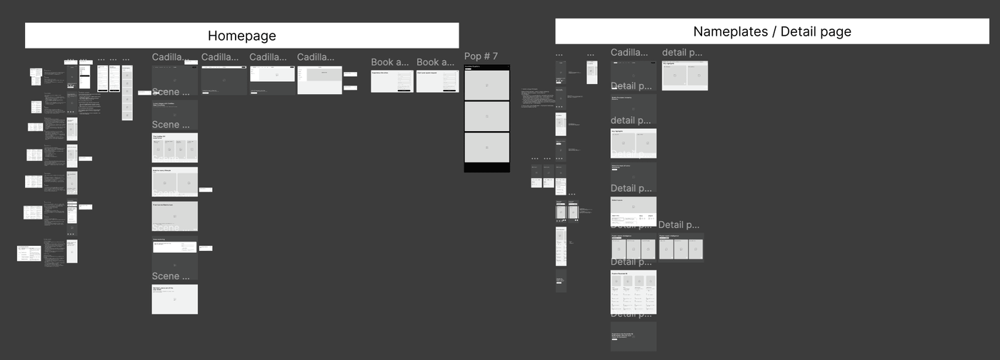
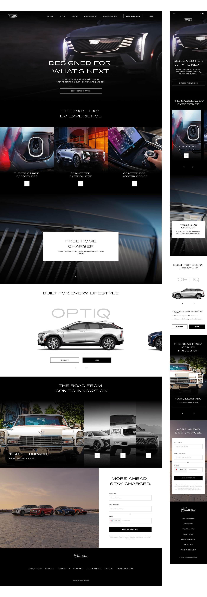
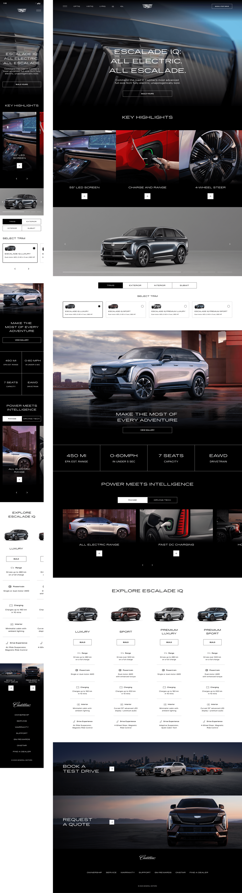
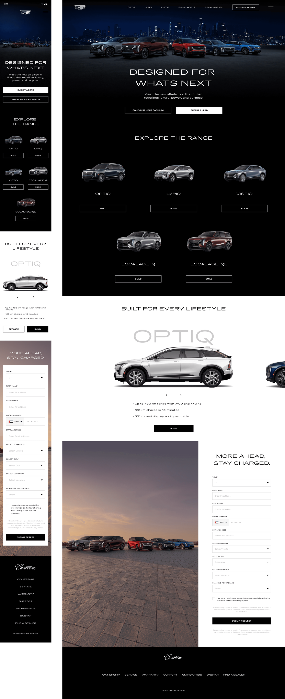
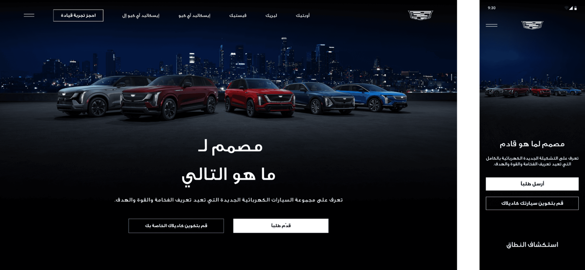
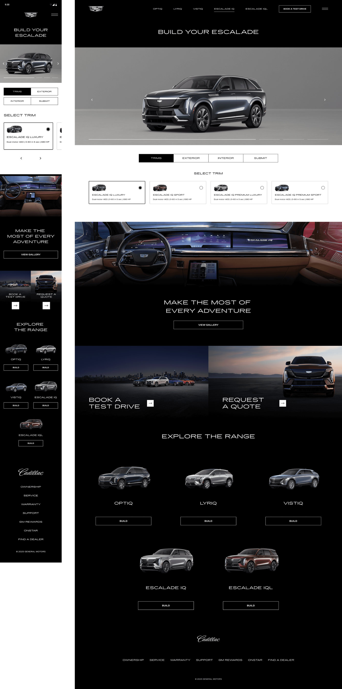
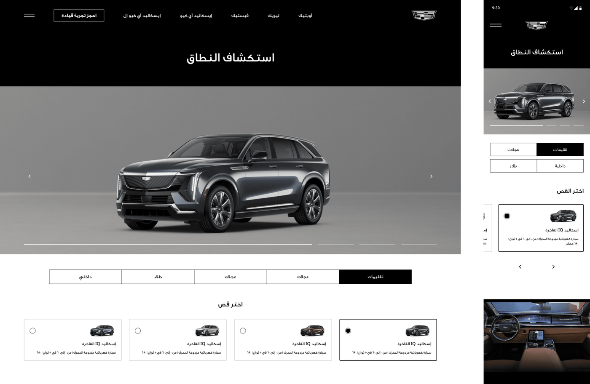

Sastaticket
Driving search to book conversion at scale
Reframed decision architecture on a 500k monthly user travel marketplace.


Cadillac's EV lineup was launching in the Middle East for the first time. Nothing from other regions transferred directly, which meant every pattern, structure, and interaction had to be defined from scratch for this market.
The platform had one job: move someone from first encounter to registering interest in an EV they had never seen in this region before. That ran across two separate surfaces, a model microsite and a vehicle configurator, that had to behave like one continuous journey rather than two products a user got handed between.
I led the work end to end, from research and journey mapping through experience direction across both surfaces.
Building for a market with no existing regional foundation meant every visual pattern, interaction principle, and page structure had to be defined from scratch. Global references from other Cadillac markets existed but couldn't be directly applied to the Middle East context.
The audience itself was the harder part. This lineup had to reach three groups at once: existing Cadillac owners who knew the brand but not EVs, buyers considering an EV for the first time, and people already driving EVs who would judge this against what they owned. Each arrived with different knowledge, different scepticism, and different questions.
And the journey spanned two independently built surfaces. In a premium automotive context, a seam between them reads as low quality immediately, and every seam is a place someone drops out before registering interest.
MRM had already built configurators for GM, and Cadillac sits inside GM, which made that behavioural data directly relevant rather than merely adjacent. I partnered with the data team to work through it and understand how people actually move through a configurator, where they stall, and what they do before committing.
GM Arabia supplied regional user data covering all three audiences: existing Cadillac buyers, prospective EV buyers, and current EV drivers. That mattered because the assumptions each group brings are different. Someone who already drives an EV isn't looking for reassurance that the technology works, they're comparing specifications. Someone coming from a combustion Cadillac needs the opposite. Alongside that, a competitive analysis of premium EV platforms established what this audience had already been trained to expect from the category, both regionally and globally.
The findings drove the journey map and wireframes before any visual direction existed. The structural principle was that the microsite and configurator were one path, not two destinations. Every decision about what a user sees, and when, was built around moving them toward registering interest without the handoff between surfaces being something they notice. Shared terminology, shared patterns, and a consistent sense of progression carried across both. Wireframes were mapped against the data, iterated, and aligned before design began.

The initial direction called for an experience that established credibility before asking for commitment. For a lineup arriving in a market that had never seen it, and for buyers who had no regional reference to compare it against, the reasoning was that conviction had to come before configuration. That produced a structure leading with narrative and context, giving each model room before surfacing product detail, and holding a visual standard that matched the vehicles themselves. Every decision answered one question first: does this earn enough trust to make someone want to configure?


When the work was presented, the Cadillac team wanted to move toward a more conversion focused structure, getting users to product pages faster rather than guiding them through context first. I raised the original direction and the research behind it, the team made their call, and I executed the revised version without friction. The job was to deliver excellently against the direction given, communicate clearly when something shifted, and adapt quickly when priorities changed.
The final homepage prioritised the lineup and moved users toward product pages faster. The product page was restructured to lead with the configurator, removing the storytelling layer in favour of immediate product engagement.




Despite the shift toward a simpler and more conversion focused structure, the interactive car carousel from the original proposal was kept in the final version. It was the one element the Cadillac team didn't want to lose.
Usability sessions were run against interactive prototypes, with participants given goals to complete rather than screens to react to. Findings fed back into the designs iteratively rather than arriving as a single round of feedback at the end, which meant improvements compounded across the journey instead of being patched onto it.
A consistent visual and interaction foundation established across both the microsite and configurator from the very first release. The platform felt coherent and premium across both surfaces despite being built as two separate products. Both the original proposal and the final direction maintained the same visual quality standard throughout.
Three audiences arriving with three different levels of knowledge is a structure problem before it's a content problem.
Getting the foundation right at launch is significantly easier than fixing inconsistency after multiple teams have built on top of it.
Working within strict brand constraints taught me that limitation can be a creative tool. Tighter governance often produces more considered work.
An initial direction is a starting point, not a contract. Adapt quickly and communicate clearly when priorities change.
Reframed decision architecture on a 500k monthly user travel marketplace.